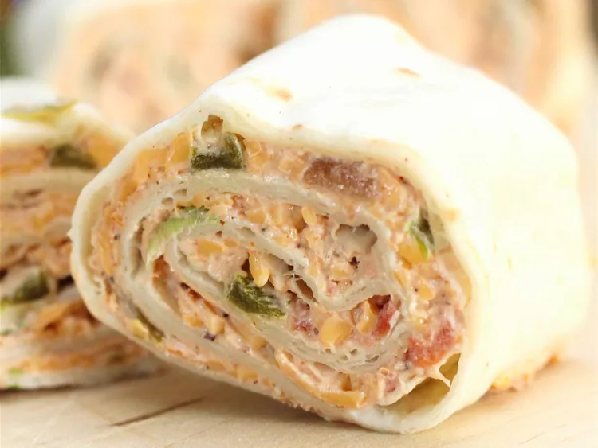

Tortilla Rollups

Description
These tortilla rollups are always a huge hit with the kids as well as the adults. A creamy, cheesy salsa mixture provides the filling. They are easy to make and may be prepared in advance.
Ingredients
-
½ cup white sugar
- 1 ½ cups shredded Cheddar cheese
- 1 cup chunky salsa
- 1 cup sour cream
- 1 (8 ounce) package cream cheese, softened
- 1 (1 ounce) package dry fiesta-style ranch dressing mix
- 10 (10 inch) flour tortillas
Steps
- Stir together Cheddar cheese, salsa, sour cream, cream cheese, and ranch dressing mix in a medium bowl until combined. Spread evenly onto tortillas. Roll up tortillas and chill in the refrigerator until ready to serve.
- To serve, cut rolled tortillas into 3/4-inch slices and arrange on a large serving platter.